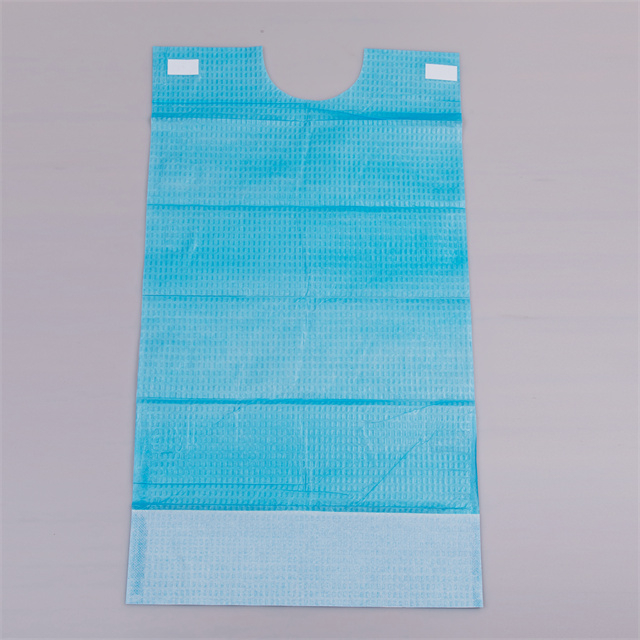

It is a small product — lightweight, inexpensive, easy to overlook. But for the millions of people in hospitals, nursing homes, and assisted-living facilities who need assistance with meals, a disposable patient bib is anything but insignificant. It sits between the patient and the rest of the world, and it does something far more important than keep food off a hospital gown. It preserves dignity. It reduces anxiety. And, perhaps most surprisingly for many care facilities, it saves staff time and reduces laundry costs in a measurable way.
Despite these benefits, disposable patient bibs remain under-specified in many care settings. Facilities still rely on cloth napkins tucked into collars, reusable fabric bibs that require laundering between each use, or nothing at all — leaving patients to worry about spills and staff to manage soiled linen after every meal. This article examines why disposable bibs deserve a more prominent place in care protocols and how procurement teams can select the right specification for their environment.
Why Patient Bibs Are About More Than Spills
The most obvious function of a patient bib is to catch food and drink that would otherwise stain clothing or bed linen. But the deeper value lies in the psychological impact. Eating is one of the last areas of independence that many patients hold onto, even as their mobility, cognition, or physical coordination declines. Being unable to eat without soiling oneself is one of the most frequently cited sources of embarrassment among older adults in care settings. When patients know they are protected — when they do not have to mentally rehearse each bite or brace themselves for an inevitable spill — they eat more, they relax more, and they participate more willingly in social dining, which is itself a recognised factor in nutritional intake and quality of life.
For care staff, disposable bibs also serve a practical purpose: they reduce the volume of soiled linen that must be collected, sorted, and laundered after each meal. In a facility with 100 residents eating three meals a day, even if only 20% of residents require bib assistance, that is 60 soiled linen items per day — 420 per week — that can be reduced to 60 single-use bibs disposed of in general waste. The laundry cost saving is real, but the time saving for staff — time that would otherwise be spent changing and collecting soiled linen — is arguably more valuable in a sector that is perpetually short-staffed.
Material Options and When to Use Each
Disposable patient bibs are most commonly made from PE (polyethylene) film, but the category includes several variations that serve different needs. Understanding the options helps care teams match the bib to the specific risk profile of their residents or patients.
PE Film Bibs — The Standard Choice
PE film bibs are the most common type found in care settings. They are made from a thin polyethylene film that is fully waterproof, lightweight, and inexpensive. The film surface is smooth and easy to wipe clean if only partially soiled, and the bibs are typically secured with a tie-string or an integrated adhesive strip at the neck.
PE bibs are ideal for:
- General mealtime use in hospitals, care homes, and assisted-living facilities
- Dental procedures, where they protect patient clothing from water spray, impression material, and debris
- Short-duration tasks where a simple, low-cost barrier is sufficient
- Facilities where budget is a primary consideration and basic liquid protection meets the need
The limitation of PE bibs is that the film can tear if handled roughly, and they offer no absorbency — liquids pool on the surface rather than being absorbed, which can be a minor discomfort for some users. For most mealtime scenarios, however, PE bibs perform well and are the default choice for a reason.
Nonwoven or Laminate Bibs — The Premium Option
Some disposable bibs use a nonwoven fabric layer (PP or SMS) or a laminate construction with a soft nonwoven surface and a waterproof backing. These bibs combine absorbency with waterproof protection: the top layer absorbs small spills and provides a softer, more cloth-like feel against the skin, while the backing layer prevents liquids from reaching the patient's clothing.
Laminate bibs are preferable for:
- Patients with sensory sensitivity who find the smooth PE surface uncomfortable
- Scenarios involving thicker liquids — soups, purees, and nutritional supplements — where some absorbency improves user comfort
- Extended meal durations where comfort matters more than unit cost
- Facilities that want to offer a more premium patient experience, such as private care homes or upscale assisted-living communities
The unit cost of laminate bibs is higher than PE bibs, but the improvement in patient satisfaction can justify the premium for facilities that prioritise quality of life as a core metric.
Printed and Patterned Bibs — The Comfort Choice
A growing segment of the disposable bib market features printed patterns — floral designs, geometric shapes, and even custom-branded prints. These are not a gimmick; research in dementia care and geriatric nutrition has shown that visual cues and pleasant aesthetics can improve food intake and reduce mealtime resistance among cognitively impaired residents. A bib that looks more like a napkin or a piece of clothing and less like a medical device reduces the stigma associated with wearing it.
For facilities serving populations where dining experience is a competitive differentiator — private care homes, boutique assisted-living communities, and premium dental practices — printed disposable bibs are a cost-effective way to signal attention to patient experience without adding meaningful cost per use.
Clinical and Non-Clinical Applications
Hospital Wards and Care Homes
Mealtime is the primary use case. In hospitals and care homes, disposable bibs are distributed at the beginning of each meal to residents or patients who need feeding assistance or who are at risk of spills due to tremor, reduced coordination, cognitive impairment, or swallowing difficulties. The single-use nature means that cross-contamination between patients is eliminated, and staff can quickly provide a fresh bib if the first one becomes soiled — something that is logistically impossible with reusable fabric bibs during a busy meal service.
Dental Practices
Dental bibs are one of the most universally recognised uses of disposable PE bibs. During dental procedures, patients are exposed to water spray, saliva, polishing paste, impression material, and small debris. The dental bib — typically placed with a clip or holder at the neck — protects the patient's clothing and provides a convenient surface for the dentist or hygienist to wipe instruments. Unlike PE mealtime bibs, dental bibs are usually smaller and designed to cover the chest area only, with a built-in retention system to keep them in place during procedures.
Home Care and Independent Living
As more older adults choose to age in place, home care packages increasingly include mealtime support. Disposable bibs are a practical addition to home care supply orders, giving caregivers a quick and dignified solution for mealtime protection without the burden of laundering. For independent-living residents who can manage most tasks but struggle with mealtakes, keeping a supply of disposable bibs in the kitchen provides autonomy and reduces anxiety about cooking or eating alone.
"We switched from cloth napkins to disposable PE bibs two years ago. The change was driven by laundry costs initially, but the feedback from residents was overwhelmingly positive. Several told us they felt 'less embarrassed' eating with a proper bib. One resident who used to skip lunch because she was afraid of staining her own clothes now eats every meal with us. That alone was worth the switch." — Activities Coordinator, Residential Care Home, Yorkshire
Infection Control and Hygiene Benefits
Reusable fabric bibs, while more environmentally sustainable in theory, carry an infection control risk that is often under-appreciated. When a reusable bib becomes soiled during a meal, it must be removed, transported to a laundry area, washed at appropriate temperature, dried, and restocked. If any step in this chain is compromised — inadequate washing temperature, cross-contamination with other soiled linen, improper storage — the bib can become a vehicle for pathogen transmission. In settings where residents include immunocompromised individuals or those with antibiotic-resistant infections, this risk is not trivial.
Disposable bibs eliminate the laundering chain entirely. Each bib is used once and discarded, removing the possibility of cross-contamination between uses. For infection control officers, this is a clean and controllable protocol — no temperature logs, no laundry audit trails, no questions about whether a soiled bib received the correct wash cycle. The simplicity of the disposable model is its strongest infection control argument.
Additionally, the waterproof nature of PE bibs means that liquids do not penetrate through to the patient's clothing, reducing the risk of skin contact with potentially contaminated food residues. For patients with incontinence or skin breakdown, keeping the torso area dry during meals is a meaningful comfort and hygiene benefit.
Bib Selection Comparison
| Feature | PE Film | Nonwoven / Laminate | Printed |
|---|---|---|---|
| Waterproof | Yes ✓ | Yes ✓ | Yes ✓ |
| Absorbent | No | Partial ✓ | Varies |
| Softness | Basic | High | Medium |
| Aesthetic Appeal | Plain | Plain | High ✓ |
| Tear Resistance | Low-Medium | Medium | Low-Medium |
| Relative Cost | Lowest | Medium | Low-Medium |
| Best For | General meals / dental | Sensitively sensitive patients | Dementia care / premium facilities |
Operational and Procurement Considerations
When sourcing disposable patient bibs, procurement teams should consider several factors beyond unit price:
- Fastening type. Tie-string bibs are adjustable and work for most neck sizes, but require manual dexterity from staff to tie and untie. Bibs with integrated adhesive strips are faster to apply but may leave residue on patient skin or clothing, and the adhesive can fail if the patient sweats or if the bib becomes wet. For high-volume settings, speed of application matters — a bib that takes five seconds to apply instead of fifteen seconds saves meaningful staff time over hundreds of meals.
- Size and coverage. Standard mealtime bibs typically measure approximately 40 × 50 cm, providing coverage from the neck to the lap. Dental bibs are smaller, around 33 × 43 cm. For larger patients or those who require full-torso coverage during feeding, oversized bibs are available and may be necessary to prevent spills from reaching clothing.
- Packaging format. Bibs are typically supplied in packs of 50 or 100, shrink-wrapped or boxed. For facilities with limited storage space, compact packaging reduces the footprint of bib inventory. For facilities with automated dispensing systems, bibs must be compatible with the dispenser mechanism — flat-folded bibs are standard for most dispenser-compatible designs.
- Colour and visibility. White bibs are standard, but coloured bibs (light blue, pink, green) can serve practical purposes. Colour-coding bibs by diet type — for example, using different colours for patients on pureed diets versus regular diets — can help kitchen and care staff quickly identify dietary requirements during meal service. This is a small detail, but it can reduce errors in mixed-diet settings.
- Environmental disposal. PE bibs are classified as general waste in most jurisdictions when soiled with food. They should not be placed in clinical waste streams unless contaminated with blood or body fluids that meet the definition of clinical waste. Clear guidance for care staff on disposal classification prevents unnecessary clinical waste costs.
The Business Case for Disposable Bibs
For procurement teams evaluating whether to switch from reusable cloth napkins or fabric bibs to disposable PE bibs, the cost comparison is straightforward but often misunderstood. The unit cost of a disposable PE bib is typically a fraction of the per-use cost of laundering a reusable fabric bib when you account for water, energy, detergent, labour, and equipment depreciation. Studies in institutional laundry cost analysis have consistently found that single-use disposables are more economical than reusables for low-value, high-turnover textile items when the laundering cycle cost exceeds approximately three to four times the disposable unit cost.
Beyond direct cost savings, the operational benefits are significant:
- Reduced linen inventory. Facilities need fewer fabric bibs in rotation, freeing up capital and storage space.
- Staff time reallocation. Time previously spent sorting, collecting, and tracking soiled bibs can be redirected to direct patient care.
- Consistent quality. Every disposable bib is clean and intact. Reusable bibs degrade over wash cycles, and worn or stained bibs are sometimes deployed when inventory is low — a subtle but real dignity issue that disappears with single-use products.
- Scalability. During periods of high occupancy or seasonal fluctuations, disposable bib supply scales instantly with demand, whereas reusable bib inventories require advance planning and capital investment.
Conclusion
Disposable patient bibs are a small product with an outsized impact. They protect clothing, yes — but more importantly, they protect dignity, reduce anxiety, streamline operations, and support infection control in settings where every controllable factor matters. For care homes, hospitals, and dental practices that have not yet standardised on disposable bibs, the combination of clinical, operational, and financial arguments makes a compelling case for change.
Newrise Medical manufactures disposable patient bibs in PE film and laminate constructions, with tie-string or adhesive fastening options, in standard and printed designs. Produced in our ISO 13485 and CE certified facility in Changzhou, China, with OEM and custom packaging available. Contact us for samples and pricing →